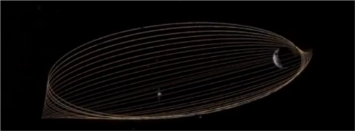
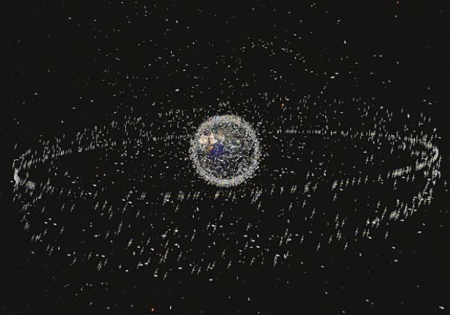
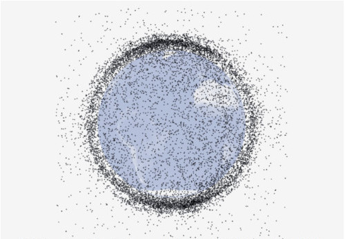

La position des déchets dans l'espace
Même si les satellites sont libres dans l'espace, ceux-ci se concentrent principalement sur quelques orbites.
La plus éloignée de nous se trouve être Pioneer, qui après avoir remplit sa mission dérive librement à près de 15 milliards de kilomètres de la Terre.
La première orbite réellement importante la plus éloignée de la Terre, l'orbite excentrique, se trouve entre quelques milliers et 100 000 km d'altitude. Elle est très sensible aux forces perturbatrices du Soleil et de la Lune.
Orbite excentrique des débris spatiaux
L'anneau géostationnaire, lui, est plus proche. Il ne se situe « qu'à » 35 000 km. Sur celui-ci, les satellites évoluent de manière synchronisée avec la rotation de la Terre. En moyenne, seulement 190km séparent deux objets, satellites ou autre. Les engins spatiaux hors service en orbite géostationnaire peuvent dériver et menacer les satellites à proximité. C'est pourquoi il est recommandé d'exiler ces satellites 300km plus haut, pour rejoindre l'orbite de « rebut », là où l'on envoie les objets devenus indésirables pour l'Homme.
L'anneau géostationnaire des satellites terrestres
Sur l'orbite terrestre basse (entre 5000 et 1200 kilomètres de la Terre) se trouve la plus grande partie des satellites en activité, deux tiers des objets spatiaux produits par l'Homme se concentrant à cet endroit (600 satellites actifs). Mais il s'y trouve aussi le plus grand nombre de déchets spatiaux.
Déchets spatiaux de plus de 10 cm en orbite basse (Illustration : NASA)
Ensuite, plus bas se trouve l'orbite de la Station Spatiale Internationale, à 400km de la Terre. Ici se trouvent bien moins de déchets, mais il est tout de même déjà arrivé de voir
des manœuvres d'évitement. En effet, par la force de la pesanteur, les déchets se rapprochent petit-à-petit de la Terre, passant forcément par l'orbite de la Station Spatiale Internationale.
Enfin, encore plus bas (en-dessous de 200 km), des objets non-contrôlés s'apprêtent à rentrer dans l'atmosphère.
Les plus gros objets résistants, telles les cuves en titane doivent être descendus vers un endroit sur Terre sélectionné et sûr par une manœuvre complexe et contrôlée. Sans contrôle, à partir de 100km, les parties des objets sont arrachées lors de la décélération, les matériaux non-résistants telles l'aluminium fondent, et il ne reste plus que les matériaux résistants aux fortes températures comme le titane ou le verre. Ils refroidissent après avoir passé l'atmosphère, puis tombent à une vitesse de 300km/h, principalement dans les océans, ceux-ci recouvrant 70 % de la Terre.
 Schéma des différentes orbites terrestres
Schéma des différentes orbites terrestres
Il est donc compréhensible que ces débris peuvent causer de nombreux dommages et que leurs conséquences peuvent être sans précédent